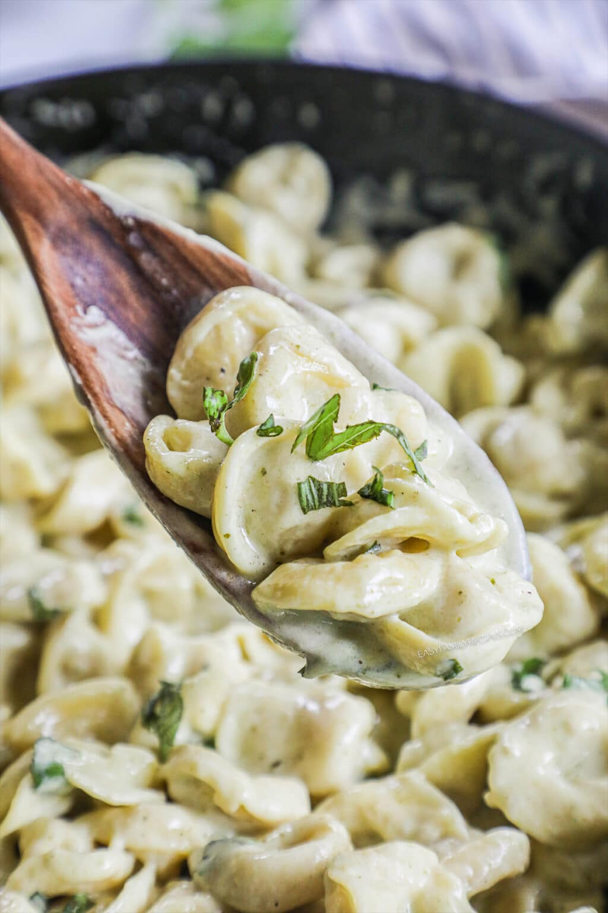

Pesto Tortellini
Home

Description
Pesto Tortellini is a dish that sends me back in time and provides maximum comfort. I used to eat homemade pesto with linguine when I was a child, but discoverd pesto with tortellini as a young adult in college. I've craved this dish ever since as it unites my childhood nostalgia with my adult independence. This recipe is simple to make and will provide you with a new yearning for bygone days and prepare you for the struggles ahead.
Ingredients
- Butter
- Flour
- Chicken Broth
- Heavy Cream
- Pesto
- Wedge of Parmesan Cheese
- Frozen or refrigerated Cheese Tortellini
Steps
- Melt the butter in a large pan until foamy, then whisk in the flour for 30-60 seconds.
- Whisk the broth into flour until smooth and simmering, then slowly whisk in the cream and return to a simmer.
- Stir in the pesto and parmesan cheese until smooth then add in the tortellini and cook for 4-5 minutes.